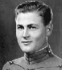

1. Ley de Murphy
2. Si algo puede ir mal, irá mal.
3. Primer corolario de Murphy
4. Nada es tan fácil como parece.
5. Tautología del estudiante
6. El profesor nunca falta el día del examen.
7. Primera ley del viaje
8. Siempre se tarda más en llegar que en regresar.
9. Primera ley del debate
10. Nunca discutas con un tonto... La gente quizá no distinga la diferencia.
11.Primera regla domóstica de Fausner
12.Un cuchillo sin filo siempre te puede cortar el dedo.
13.Tercer corolario de Chisholm
14. Si explicas algo con suma claridad para evitar malentendidos, alguien te entenderá mal.
Edward A.
Murphy, Jr

Edward Aloysius Murphy, Jr. was an American aerospace engineer who worked on safety-critical systems. He is best known for Murphy's law, which is said to state, "Anything that can go wrong will go wrong." Wikipedia
Born: January 11, 1918, Panama Canal Zone
Died: July 17, 1990
Education: Air Force Institute of Technology